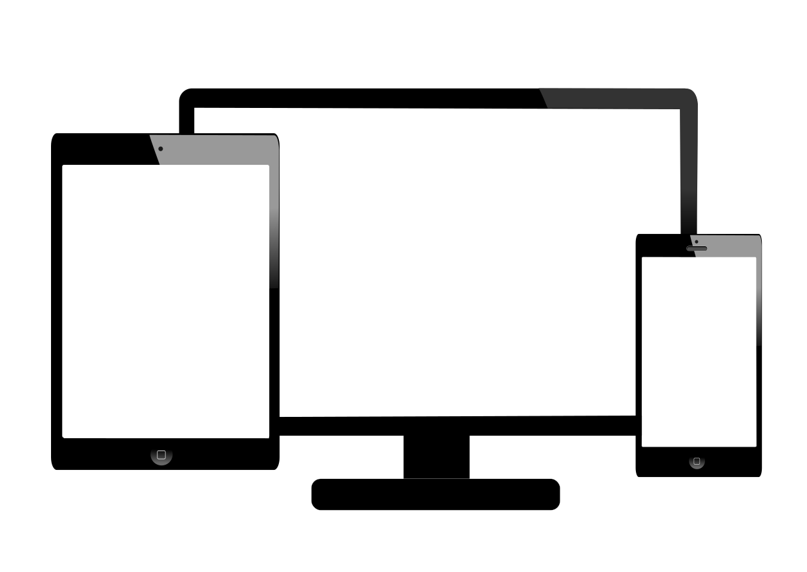

<!-- A propos Section -->
<section id="apropos">
    <div class="container">
        <div class="row">
            <div class="col-lg-12 text-center">
                <h2 class="section-heading">About</h2>
                <h3 class="section-subheading text-muted"><i class="fa fa-quote-left fa-3x fa-pull-left" aria-hidden="true"></i> «Le monde ne sera vraiment heureux que lorsque tous les hommes auront des âmes d’artistes, c’est-à-dire que tous prendront du plaisir à leurs tâches, en comprendront la beauté et la vérité» Auguste Rodin.</h3>
            </div>
        </div>
        <div class="row">
            <div class="section-p col-sm-9">
                <div>
                    <p>
                        I'm Julie Pédeville, I'm 23 year old, master graduate on "Commercial Strategy and Buisness Development" from the Ipag Buisness School.
                    </p>
                    <p>
                        Mes nombreux stages effectués en France et à l'étranger, que ce soit dans la vente (B to C), la logistique, les achats puis le Marketing Digital & les médias sociaux m'ont permis d'approfondir l'environnement de l'entreprise et de développer des capacités relationnelles, une réelle autonomie et un sens
                        de l’organisation.
                    </p>
                    <p>
                        Mon dernier stage puis emploi dans le Digital Marketing a été un réèl déclic dans mes motivations professionelles.
                    </p>
                </div>
            </div>
            <div class="section-img col-sm-3 timeline-inverted">
                
            </div>
        </div>
        <div class="row">
            <div class="col-md-12 text-center">
                <a href="#competences" class="page-scroll btn btn-xl sr-button">What are my skills ?</a>
            </div>
        </div>
    </div>
</section>